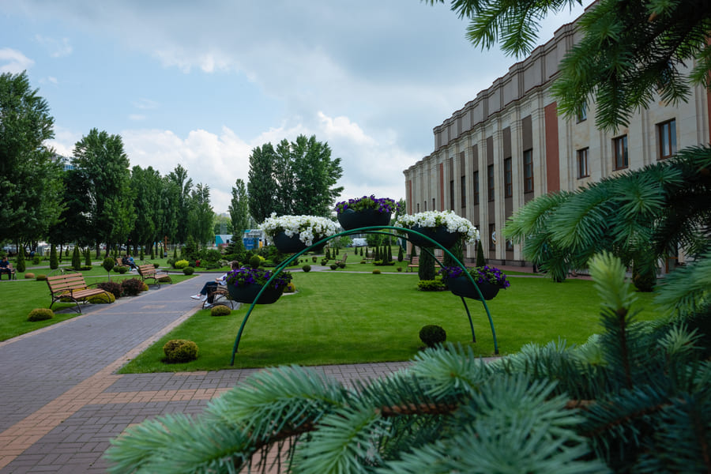
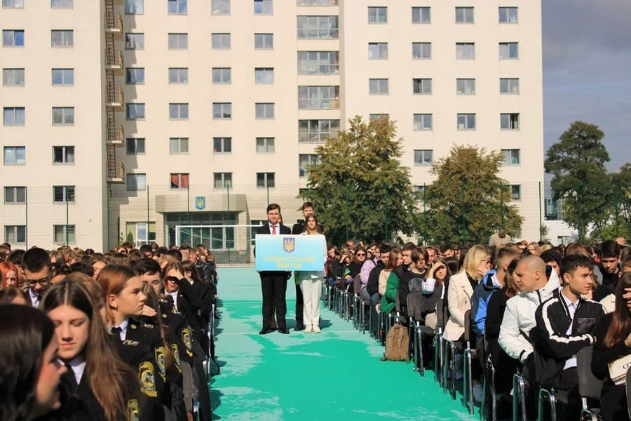
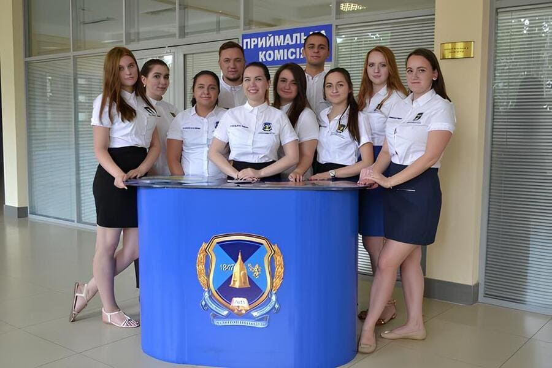

You can hear these words among Kyiv citizens, tourists, or even someone who has only seen the city in digital media. Kyiv is one of the oldest cities in Europe and the capital of Ukraine. Thanks to the synergistic combination of traditions, values, and approaches to scientific and academic activities of Odesa Law Academy with the capital city opportunities and prospects, Kyiv University of Intellectual Property and Law is now one of the best and most advanced private universities in the country. It enjoys respect and trust among thousands of applicants and their parents.

Kyiv University of Intellectual Property and Law after the completion of recreational zones construction
The history of the establishment and development of Kyiv Institute of Intellectual Property and Law of the National University 'Odessa Law Academy' dates back to 1996. That year, in accordance with a joint decision of the Verkhovna Rada Committee on Science and Education and the Ministry of Science, Technology, and Industrial Policy of Ukraine, the Closed Joint-Stock Company 'Institute of Intellectual Property and Law' was founded.
The main focus of the newly established educational institution was the training of highly qualified specialists for the state system of legal protection of intellectual property, as well as for enterprises, organizations, and institutions of all forms of ownership. Additionally, it provided specialized education and professional training in the fields of intellectual property, scientific, scientific and technical, and innovative activities.
On November 27, 2004, by order No. 821 of the Ministry of Education and Science of Ukraine, the institute was designated as the leading institution for training, retraining, and professional development of personnel in the field of intellectual property. In 2008, in accordance with the resolution of the Cabinet of Ministers of Ukraine, dated October 10, 2007, and the order of the Ministry of Education and Science of Ukraine, dated November 29, 2007, the Closed Joint-Stock Company 'Institute of Intellectual Property and Law' was transformed into the State Higher Educational Institution 'State Institute of Intellectual Property'.
Since then, Kyiv Institute of Intellectual Property and Law has gained full-fledged status as a metropolitan structural unit of Odesa Law Academy. However, compared to other branches of the university, Kyiv branch developed at a rapid pace in both scientific and academic, as well as material and technical aspects.
Between 2011 and 2016, a total of 1,546 students got bachelor's and master's degrees. The high quality of specialist training at the institute is evidenced by the following facts: namely, out of 414 patent attorneys in Ukraine, about 150 were graduates of the institute; Additionally, patent attorney agencies (patent law firms) are headed by institute graduates I.O. Spasky, D.E. Benatov, V.V. Badanin, I.V. Kondratyuk, and others.

Students of KIIPL NU 'OLA' solemnly carry out the student ID at the newly built stadium on the occasion of Knowledge Day
Thus, in November 2014, to streamline its structure and comply with the Law of Ukraine 'On Higher Education', the rector of the National University 'Odessa Law Academy' issued an order to rename the institute as the State Institute of Intellectual Property of the National University 'Odessa Law Academy' in Kyiv. This change officially granted the institute a special, nationally significant status.
Such remarkable scientific and academic potential naturally contributed to the development of the university material and technical infrastructure: This included the expansion of academic buildings, dormitories, recreational areas for students, and sports complexes.
In 2017, the comprehensive renovation of the dormitory at Kyiv Institute of Intellectual Property and Law of the National University 'Odessa Law Academy' was completed. In addition to modern European-style rooms, a large sports hall was built within the dormitory premises, allowing students to maintain their physical fitness free of charge. They also have the opportunity to engage in professional training in gymnastics and martial arts, including boxing, karate, judo, pankration, and more.
The modern infrastructure of the dormitory was highly praised by students and athletes of Kyiv Institute, namely, candidates for the Master of Sports title, international and national competitions winners, as well as by the President of the National University 'Odesa Law Academy' Sergiy Kivalov, who attended the opening ceremony.
On September 18, 2018, projects for the improvement of the Student Campus area were brought to life. One such project was the opening of the 'The Carpathian Waterfall' complex. The best landscape designers and builders from western Ukraine worked on the project, creating a truly magical oasis. There are powerful waterfall cascades amidst lush greenery and stones, seamlessly blending with unique pedestrian paths that elegantly weave through flower lawns.
As Kyiv journalists wrote on that day: 'Trees have been planted around the area to shield it from urban noise and dust. The mini-park and complex are fully equipped for a pleasant stay, featuring an ample number of cast-iron benches, trash bins, and street lamps. Students regularly visit the site, and residents of Kyiv Darnytskyi district admire the picturesque beauty that continues to flourish within the institute campus. They rejoice in the fact that Kyiv Institute of Intellectual Property and Law of NU 'OLA' has become not only a scientific and academic center, but also a true gem of the Left Bank of the capital.'
It is worth noting that shortly before this, on September 1, 2017, another recreational mini-park 'The Carpathian Hill' was opened. This enchanting corner features a rocky hill harmoniously blended with unique pedestrian paths that gracefully cut through vibrant flower lawns. 'The Carpathian Hill' mini-park is filled with small green oases, offering a cool retreat even during the hottest days, where visitors can relax in the shade of trees and enjoy a connection with nature. The university administration, state authorities representatives, as well as the renowned TV host and showman Dmytro Komarov attended the opening ceremony of the student mini-park.
Continuing the tradition of promoting students' physical well-being, in 2018, construction began on an ambitious and large-scale project - a sports and wellness complex. This facility was designed to include a professional football field, high-quality spectator stands, spacious locker rooms, fitness and gym halls.
On September 18, 2018, the foundation stone was laid for the sports complex of Kyiv Institute of Intellectual Property and Law at the National University 'Odesa Law Academy'. The first stone, embedded in construction, symbolizes a legacy passed on to future generations, students who will honor the university traditions and proudly carry the title of KIIPL NU 'OLA' student.
Sergiy Kivalov, President of the National University 'Odesa Law Academy'; Roman Hreba, Deputy Minister of Education and Science of Ukraine; Vitaliy Klychko, Head of Kyiv City State Administration; Vasyl Felyk, Rector of Kyiv Institute attended the official groundbreaking ceremony.
In addition to infrastructure achievements, Kyiv Institute of Intellectual Property and Law is expanding its cooperation with national and international institutions, particularly in the field of patent justice. On October 4, 2017, a Memorandum of Cooperation was signed between the National University 'Odesa Law Academy' and the Patent and Trademark Office of the Republic of Azerbaijan.
The public law entity, represented by Acting General Director Gunel Sevdimaliyeva, and the President of the National University 'Odesa Law Academy', Academician Sergiy Vasylovych Kivalov, signed the Memorandum of Cooperation. The purpose of this memorandum is to facilitate the acquisition of professional skills and expertise in selected specializations by the students of the 'University' and to enhance the qualifications of the staff of the Patent and Trademark Office of the Republic of Azerbaijan. It also aims to implement joint projects, programs, and events, including symposia, conferences, seminars, round tables, and many other initiatives.

It is important to highlight that, while implementing the
best traditions of the National University 'Odesa Law Academy', Kyiv Institute has launched
several key initiatives within the capital, namely, a Legal Clinic providing free legal assistance to city
residents; a Vocational College at Kyiv Institute of Intellectual Property and Law
for secondary specialized training of future lawyers;
a Psychological Consultation and Training Center; and also six
specialized departments:
— Department of Constitutional, International Law, and Public Law Courses,
— Department of Administrative Law, Intellectual Property, and Civil Law Courses,
— Department of Criminal Law, Procedure, and Forensic Science,
— Department of Foreign Languages, Philology, and Journalism,
— Department of Cybersecurity, Information Technology, and Economics,
— Department of Philosophy and Psychology.